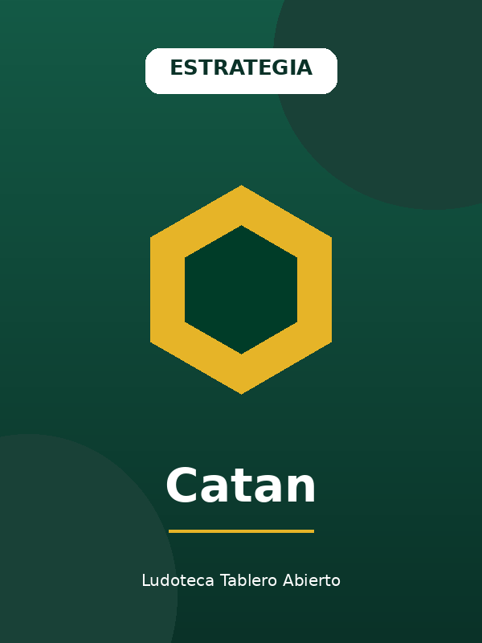

Estrategia
Catan
Un clásico imprescindible de la ludoteca. La gestión de recursos y el comercio entre jugadores, sobre un mapa que cambia en cada partida, lo convierten en una experiencia siempre distinta. Ideal para quienes buscan un desafío estratégico sin resultar abrumador para principiantes.
📄 Descargar reglamento (PDF)